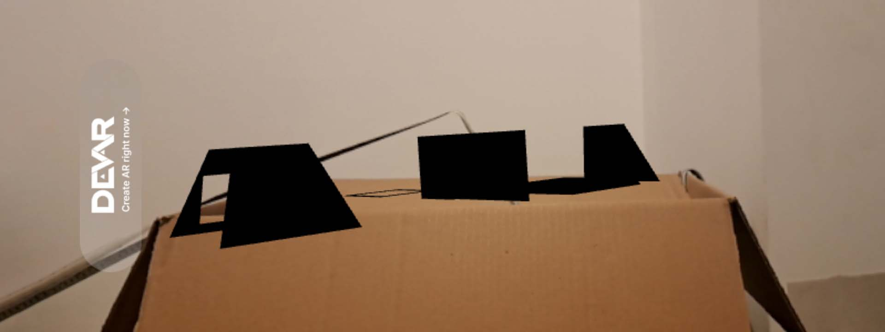
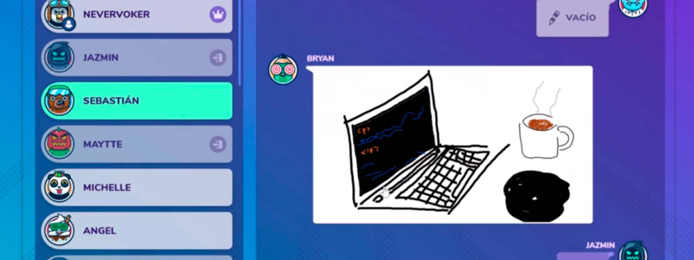
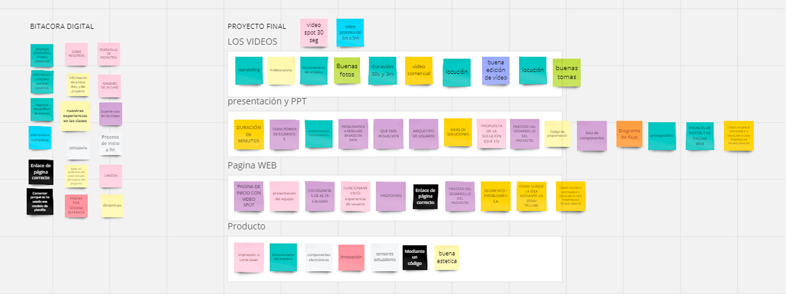

Semana 14
Laboratorio de innovación 2
Jueves 23 de Noviembre
Probamos la realidad virtual con Google Cardboard descargando su aplicación en el celular donde podíamos ver objetos en 3D en el museo o acceder a nuestra galería y también habían otras gafas más avanzadas donde se podía jugar Spiderman en primera persona. Luego nos dieron un feedback como grupo sobre la página web y subimos nuestro modelo con las piezas separadas de la maceta en WebAR para transformarlo en realidad aumentada.
Sábado 2 de Diciembre
Hicimos una dinámica en Gartic Phone donde escogimos frases sobre temas llevados durante el curso y teníamos que hacer dibujos donde el objetivo era que la frase final sea parecida a la inicial como en teléfono malogrado buscando tener una buena comunicación.
También hicimos un Miro entre todo el salón donde hicimos una lista sobre las cosas importantes que deberían estar en la Bitácora digital, en los videos, la web, la PPT y en nuestro producto final.
